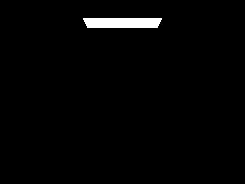

|
All of the text in your write-up should be in your own words. If you need to add additional HTML features to this document, you can search the http://www.w3schools.com/ website for instructions. To edit the HTML, you can just copy and paste existing chunks and fill in the text and image file names appropriately.
The website writeup is intended to be a self-contained walkthrough of the assignment: we want this to be a piece of work which showcases your understanding of relevant concepts through both mesh images as well as written explanations about what you did to complete each part of the assignment. Try to be as clear and organized as possible when writing about your own output files or extensions to the assignment. We want to understand what you've achieved and how you've done it!
If you are well-versed in web development, feel free to ditch this template and make a better looking page.
Here are a few problems students have encountered in the past. Test your website on the instructional machines early!
- Your main report page should be called index.html.
- Be sure to include and turn in all of the other files (such as images) that are linked in your report!
- Use only relative paths to files, such as
"./images/image.jpg"
Do NOT use absolute paths, such as"/Users/student/Desktop/image.jpg"
- Pay close attention to your filename extensions. Remember that on UNIX systems (such as the instructional machines), capitalization matters.
.png != .jpeg != .jpg != .JPG
- Be sure to adjust the permissions on your files so that they are world readable. For more information on this please see this tutorial: http://www.grymoire.com/Unix/Permissions.html
- And again, test your website on the instructional machines early!
Here is an example of how to include a simple formula:
a^2 + b^2 = c^2
or, alternatively, you can include an SVG image of a LaTex formula.
Overview
YOUR RESPONSE GOES HERE
Part 1: Ray Generation and Scene Intersection (20 Points)
Walk through the ray generation and primitive intersection parts of the rendering pipeline.
YOUR RESPONSE GOES HERE
Explain the triangle intersection algorithm you implemented in your own words.
YOUR RESPONSE GOES HERE
Show images with normal shading for a few small .dae files.

|

|
Part 2: Bounding Volume Hierarchy (20 Points)
Walk through your BVH construction algorithm. Explain the heuristic you chose for picking the splitting point.
YOUR RESPONSE GOES HERE
Show images with normal shading for a few large .dae files that you can only render with BVH acceleration.

|

|
Compare rendering times on a few scenes with moderately complex geometries with and without BVH acceleration. Present your results in a one-paragraph analysis.

|

|
| Scene | Without BVH | With BVH | Speedup |
|---|---|---|---|
| cow.dae | 113.09s | 0.77s | 146.6× |
| teapot.dae | 34.27s | 0.73s | 46.9× |
The BVH significantly sped up rendering times! For the cow model, rendering dropped from 113.09 seconds without BVH to 0.77 seconds with BVH (146.6× speedup!). Similarly, the teapot model renders in 34.27 seconds without acceleration but only 0.73 seconds with BVH (46.9× speedup!). This comes from the BVH allowing each ray to prune large sections of the scene through binary search, skipping objects outside of the non-intersected bounding boxes, and reducing the number of ray intersection tests!
Part 3: Direct Illumination (20 Points)
Walk through both implementations of the direct lighting function.
Direct illumination is computed using two sampling strategies:
1) Uniform Hemisphere Sampling: We sample directions uniformly over the hemisphere above the hit point, cast shadow rays, and accumulate contributions weighted by the BSDF and cosine term, divided by the uniform PDF ($1 / 2\pi$). This method is straightforward, but many samples are wasted on directions that do not point toward a light source.
2) Light Importance Sampling: We sample directions directly from the light sources. Area lights are sampled multiple times per shading point (using ns_area_light), while point lights require only one sample. Each contribution is visibility-checked with a shadow ray and weighted by the light-sampling PDF. Because samples are focused on high-contribution directions, this approach produces lower variance.
The key difference is where samples are spent: hemisphere sampling spreads effort uniformly, while importance sampling targets directions that are more likely to contribute illumination. As a result, importance sampling converges faster for the same sample budget.
Show some images rendered with both implementations of the direct lighting function.
| Uniform Hemisphere Sampling | Light Sampling |
|---|---|

|

|

|

|
Focus on one particular scene with at least one area light and compare the noise levels in soft shadows when rendering with 1, 4, 16, and 64 light rays (the -l flag) and with 1 sample per pixel (the -s flag) using light sampling, not uniform hemisphere sampling.

|

|

|

|
As the number of light rays increases from 1 to 64, soft-shadow noise decreases consistently.
With 1 sample per pixel and 1 light ray, the bunny's shadow is visibly noisy and low-contrast details are hard to distinguish. At $l = 1$,
each shading point relies on a single area-light sample, so radiance varies significantly from pixel to pixel.
At 4 light rays, the shadow pattern is already smoother. At 16 rays, soft-shadow boundaries are much more stable with substantially less
noise. At 64 rays, the noise is minimal and transitions look clean and continuous.
This matches Monte Carlo behavior: variance decreases approximately as $O(1/\sqrt{N})$, where $N$ is the number of samples. The improvement
is most visible in the ground-shadow region, where overlapping soft shadows become clearer as sampling increases.
Compare the results between uniform hemisphere sampling and lighting sampling in a one-paragraph analysis.
Light importance sampling clearly outperforms uniform hemisphere sampling in both quality and efficiency.
Hemisphere sampling distributes rays over all directions, so many samples land in directions with little or no contribution. In contrast,
light sampling concentrates rays toward actual emitters, which provides cleaner estimates for the same computational budget.
Visually, the difference is most noticeable in soft shadows: light sampling yields smoother and better-defined shadow boundaries, while
hemisphere sampling remains noisy at comparable settings.
Hemisphere sampling also tends to produce a stronger "glow" near the light source. Since directions are sampled uniformly, occasional direct
hits to bright emitters can introduce large local variance. Importance sampling reduces this effect by sampling from the light distribution
and correctly weighting contributions by the sampling PDF.
In practice, light sampling converges faster and achieves cleaner direct-illumination results with fewer samples.
Part 4: Global Illumination (20 Points)
Walk through your implementation of the indirect lighting function.
YOUR RESPONSE GOES HERE
Show some images rendered with global (direct and indirect) illumination. Use 1024 samples per pixel.

|

|
Pick one scene and compare rendered views first with only direct illumination, then only indirect illumination. Use 1024 samples per pixel. (You will have to edit PathTracer::at_least_one_bounce_radiance(...) in your code to generate these views.)

|

|
Direct illumination contains light that reaches the surface from emitters and then travels to the camera in one bounce.
Indirect illumination contains light that has already bounced off other surfaces, carrying color bleeding and global transport effects.
In our comparison, the direct-only image shows stronger shadow structure from the overhead light, but little color bleeding from the side
walls. The indirect-only image shows visible red/blue wall tinting on the bunny, but lacks the physically expected direct shadowing from
the light source.
To isolate direct-only illumination, we modified PathTracer::at_least_one_bounce_radiance to return zero additional
contribution, because PathTracer::est_radiance_global_illumination already adds zero-bounce and one-bounce terms:
return Vector3D(0, 0, 0);To isolate indirect-only illumination, we removed the top-level direct terms by subtracting zero-bounce and one-bounce contributions at the first recursion level:
if (r.depth == max_ray_depth) {
return L_out - 2.0 * one_bounce_radiance(r, isect) - zero_bounce_radiance(r, isect);
}
For CBbunny.dae, compare rendered views with max_ray_depth set to 0, 1, 2, 3, and 100 (the -m flag). Use 1024 samples per pixel.
|
 |
|

|
|

|
YOUR EXPLANATION GOES HERE
Pick one scene and compare rendered views with various sample-per-pixel rates, including at least 1, 2, 4, 8, 16, 64, and 1024. Use 4 light rays.

|

|

|

|

|

|

|
YOUR EXPLANATION GOES HERE
Part 5: Adaptive Sampling (20 Points)
Explain adaptive sampling. Walk through your implementation of the adaptive sampling.
YOUR RESPONSE GOES HERE
Pick two scenes and render them with at least 2048 samples per pixel. Show a good sampling rate image with clearly visible differences in sampling rate over various regions and pixels. Include both your sample rate image, which shows your how your adaptive sampling changes depending on which part of the image you are rendering, and your noise-free rendered result. Use 1 sample per light and at least 5 for max ray depth.

|

|

|
|
Part 6: Extra Credit
This section contains all extra-credit content for this report. We implemented three extensions: (1) improved pixel samplers, (2) SAH-based BVH splitting, and (7) an alternate adaptive sampling heuristic. For each item below, we include approach details, implementation notes, representative screenshots, and timing data.
Extra Credit 1: Jittered and Low-Discrepancy Pixel Samplers
Approach and method. The baseline pixel sampler draws points uniformly at random in each pixel.
We added two alternatives to reduce variance and aliasing: a stratified jittered sampler and a Halton low-discrepancy sampler.
The jittered sampler subdivides the pixel into a $4\times4$ grid and jitters one sample within each cell.
The Halton sampler uses radical inverse sequences in bases 2 and 3 to produce a more even sample pattern over time.
Both methods are integrated behind a runtime mode switch so we can run fair A/B tests on the same scene/camera/sample budget.
Implementation details. We added JitteredGridSampler2D and HaltonSampler2D, kept the original
UniformGridSampler2D, and selected the mode at runtime with PT_SAMPLER2D_MODE
(uniform, jittered, halton). All three runs below use
CBspheres_lambertian.dae, 480x360, 64 spp, 4 light samples, max depth 5.

|

|

|

|

|

|
| Sampler Mode | Render Time (s) | Rays/sec (M) | Speedup vs Uniform |
|---|---|---|---|
| Uniform | 24.3818 | 4.5679 | 1.00x |
| Jittered | 24.1180 | 4.5462 | 1.01x |
| Halton | 23.8218 | 4.7330 | 1.02x |
Discussion. At equal sample budgets, jittered and Halton produce more stable edge transitions than purely uniform random sampling, especially around geometric boundaries and smooth shading gradients. Runtime cost is nearly unchanged, and Halton is marginally faster in this specific experiment.
Extra Credit 2: Surface Area Heuristic (SAH) for BVH Splitting
Approach and method. The baseline BVH split chooses the longest axis and splits at the centroid midpoint.
We implemented a binned SAH strategy that evaluates candidate splits across all three axes and chooses the split minimizing
expected traversal/intersection cost. We used 8 bins per axis and computed per-side primitive counts and bounding boxes
to evaluate the SAH objective.
Implementation details. SAH is enabled with PT_BVH_SPLIT_MODE=sah.
A robust fallback to midpoint splitting is kept for degenerate cases (empty partitions or near-zero extents),
so construction remains stable on all scenes.
The benchmark below uses CBdragon.dae (100,012 primitives), 480x360, 32 spp, 4 light samples, max depth 5.

|

|
| BVH Split Heuristic | Build Time (s) | Render Time (s) | Total (s) | Avg Isects/Ray | Render Speedup |
|---|---|---|---|---|---|
| Centroid Midpoint | 0.0362 | 47.1098 | 47.1460 | 11.149703 | 1.00x |
| SAH (8-bin) | 0.1157 | 12.8144 | 12.9301 | 6.319625 | 3.68x |
Discussion. SAH construction is around 3.2x slower than centroid construction on this scene, but BVH build remains a small fraction of total runtime. The higher-quality split decisions reduce average intersections per ray from 11.15 to 6.32 and improve render time by 3.68x. In practice, this tradeoff is strongly favorable for complex scenes.
Extra Credit 7: Alternate Adaptive Sampling Heuristic
Approach and method. The original stopping test uses a single luminance confidence interval criterion.
We added a second mode that checks per-channel confidence intervals (R/G/B independently) with a luminance floor guard.
The goal is to avoid premature stopping in low-luminance but chromatically noisy regions.
Implementation details. This mode is enabled with PT_ADAPTIVE_MODE=channel and
PT_ADAPTIVE_LUMINANCE_FLOOR=0.001. Baseline remains available as PT_ADAPTIVE_MODE=baseline.
Comparison below uses CBbunny.dae, 480x360, 256 max spp, 1 light sample, max depth 5,
with tolerance controlled by -a 32 0.05.

|

|

|

|
| Adaptive Heuristic | Render Time (s) | BVH Rays Traced | Rays/sec (M) | Speedup vs Baseline |
|---|---|---|---|---|
| Baseline (Luminance CI) | 125.2311 | 209,337,282 | 1.6716 | 1.00x |
| Channel Variance + Floor | 126.2480 | 209,240,034 | 1.6574 | 0.99x |
Discussion. Runtime remained nearly identical for these settings, so this change should be viewed as a quality-allocation heuristic rather than a speed optimization. The channel-aware criterion redistributes samples more conservatively in colored/high-frequency regions, which is visible in the sample-rate maps. This mode is most useful when chromatic noise is more objectionable than small runtime changes.
Reproducibility note. All Part 6 metrics were produced from logged command-line runs with fixed scene and render parameters.
Logs are stored under docs/images/part6/logs.